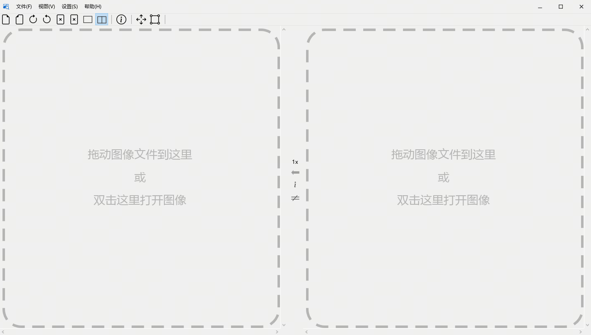
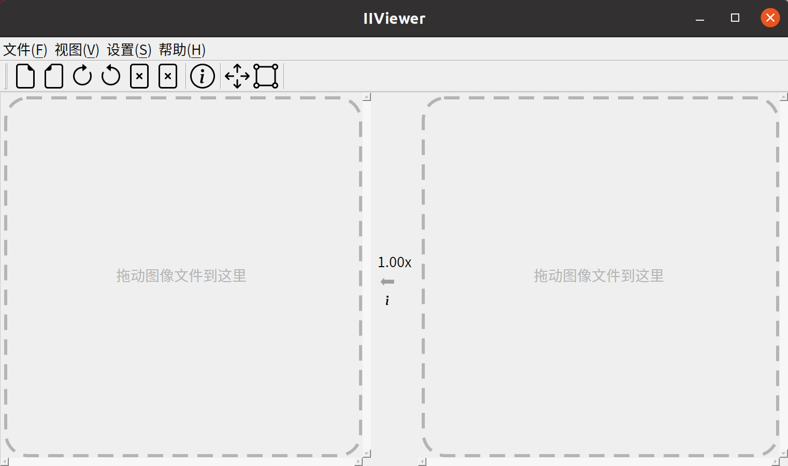
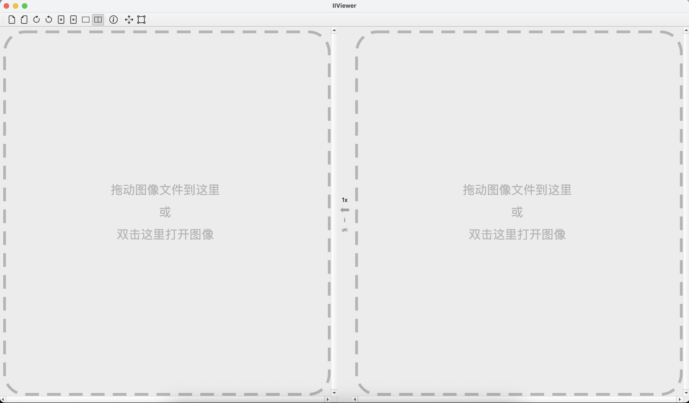
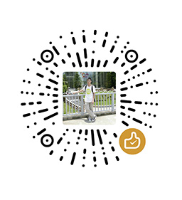

IIViewer
A thoughtful tool designed for image signal process developers
A thoughtful tool designed for image signal process developers
This repository is designed for opening and viewing ISP intermediate images. We support various image formats, categorized as follows:
IIViewer supports multiple operating systems, providing native experiences:
Native Windows application, supporting x64 architecture
DEB package installation, perfectly adapted to Linux environment
Native macOS application, supporting the latest versions
Download from the release page (we provide precompiled x64 exe and deb files), start the app on your PC, and if no unexpected errors occur, you will see:

Main UI

Ubuntu Chinese UI

macOS Chinese UI
As per the tips, drag any supported format image to the dashed rectangle, it will display the image content. When you zoom in to 96X by scrolling your mouse wheel, you will see the real value of each pixel.
For detailed build steps, please check the full README.md.
